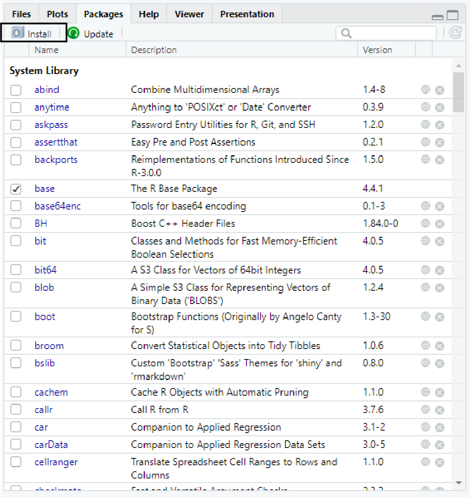
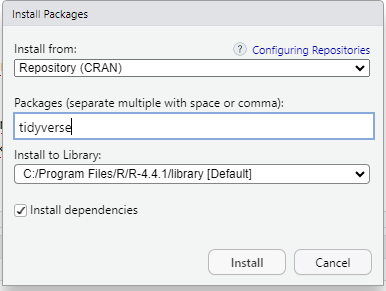
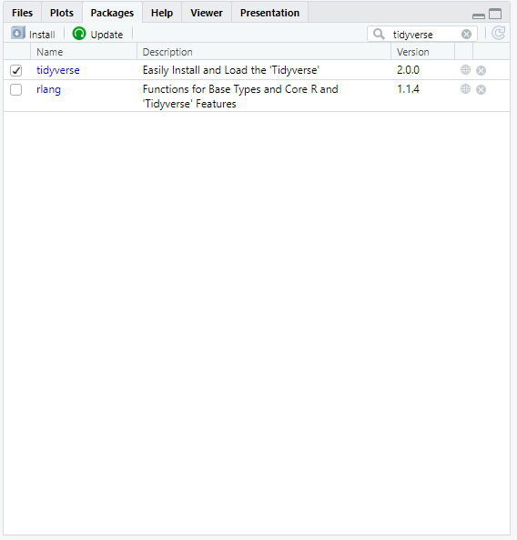
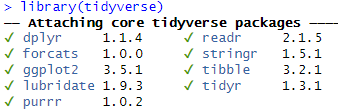

Im letzten Kapitel haben wir uns mit einigen Basics von R beschäftigt. Daran werden wir in diesem Kapitel anknüpfen und lernen, wie wir R durch sogenannte Pakete erweitern können und wie wir Daten so transformieren können, dass wir damit sinnvoll arbeiten können.
3.1 Pakete
Zwar kann R direkt nach der Installation schon relativ viel, aber gleichzeitig gibt es viele Aufgaben, die wir nur lösen können, indem wir R erweitern. Dazu nutzen wir sogenannte Pakete. Vereinfacht gesagt handelt es sich dabei um Sammlungen von Funktionen. Im Lauf des Kurses werden wir einige Pakete benötigen, die wir entsprechend nach und nach kennenlernen werden. Zunächst schauen wir uns an, wie wir Pakete installieren und laden können.
3.1.1 Pakete installieren
Um ein Paket zu installieren, müssen Sie zunächst dessen Namen kennen. Dann haben Sie zwei Möglichkeiten:
Sie können die Funktion install.packages() nutzen. Als Argument nimmt die Funktion den Namen mindestens eines Pakets in Anführungszeichen, oder mehrere Pakete durch Kommata getrennt. Für den weiteren Verlauf des Kapitels werden wir das Paket tidyverse nutzen. Damit wir das Paket nicht jedes Mal aufs Neue installieren, wenn wir ein Skript ausführen, können wir die Funktion mit dem folgenden Befehl aufrufen.
# Prüft, ob das Paket "tidyverse" installiert ist. Falls nicht, wird es installiertif(!require(tidyverse)){install.packages("tidyverse")}
Lade nötiges Paket: tidyverse
── Attaching core tidyverse packages ──────────────────────── tidyverse 2.0.0 ──
✔ dplyr 1.1.4 ✔ readr 2.1.5
✔ forcats 1.0.0 ✔ stringr 1.5.1
✔ ggplot2 3.5.1 ✔ tibble 3.2.1
✔ lubridate 1.9.3 ✔ tidyr 1.3.1
✔ purrr 1.0.2
── Conflicts ────────────────────────────────────────── tidyverse_conflicts() ──
✖ dplyr::filter() masks stats::filter()
✖ dplyr::lag() masks stats::lag()
ℹ Use the conflicted package (<http://conflicted.r-lib.org/>) to force all conflicts to become errors
Die Funktionsweise ist für Sie nicht entscheidend, aber für den Fall, dass es Sie interessiert, wird sie hier noch kurz erklärt: Wir starten mit einem sogenannten if-Befehl, deren Aufbau immer gleich ist. In der Klammer steht eine Bedingung, die geprüft wird. Sofern sie zutrifft, wird der Teil in der in den geschwungenen Klammern ({}) ausgefführt. Die Bedingung in einem if-Befehl muss immer wahr oder falsch sein, bzw. TRUE oder FALSE zurückgeben. Wird TRUE zurückgegeben, gilt die Bedingung als erfüllt, andernfalls nicht. In diesem Fall wird die Bedingung !require(tidyverse) geprüft. require() ist eine Funktion, die versucht ein Paket zu laden. Falls es aber nicht installiert ist, gibt sie FALSE zurück. Durch das Ausrufezeichen, wird dieser Ausdruck negiert. Etwas das nicht FALSE ist, ist in der R-Logik TRUE. In der Summe bedeutet das also, dass wir erst prüfen, ob das Paket vorhanden ist und falls nicht, wird es installiert.
Alternativ können Sie im Bereich unten rechts auf den Reiter Packages und dort auf Install klicken.

Anschließend öffnet sich ein Fenster, in dem Sie den oder die Namen der gewünschten Pakete eintragen können.

3.1.2 Pakete laden
Auch zum Laden von Paketen haben Sie mehrere Möglichkeiten:
Sie können den Befehl von oben nutzen, da die require()-Funktion versucht, das angegebene Paket zu laden. Sofern das Paket bereits installiert ist, wird es einfach nur geladen.
Sie können auch die library()-Funktion verwenden. Auch hier müssen Sie nur den Namen des Pakets als Argument übergeben. Diesmal allerdings ohne Anführungszeichen. Der Unterschied zu require() ist, dass die Funktion eine Fehlermeldung zurückgibt, falls das Paket nicht vorhanden ist.
# Lädt das Paket "tidyverse"library(tidyverse)
Alterantiv können Sie wieder auf den Reiter Packages unten rechts navigieren, den Namen des Pakets im Suchfeld eingeben und anschließend einen Haken im entsprechenden Feld setzen.

3.1.3 Das tidyverse
In den beiden vorherigen Abschnitten haben wir das tidyverse-Paket installiert und geladen. Strenggenommen handelt es sich dabei nicht um ein einzelnes Paket, sondern gleich eine ganze Sammlung. Das sehen Sie auch, nachdem Sie das Paket geladen haben. In der Konsole wird uns gleich eine ganze Reihe an Paketen angezeigt, die geladen wurden:

Schauen wir uns einmal kurz an, worum es sich bei diesen Paketen handelt:
dplyr ist gewissermaßen das Herzstück des tidyverse. Das Pekt enthält zahlreiche Funktionen, die wir für die Datentransformation benötigen. Sie können damit z.B. neue Variablen berechnen, Datensätze filtern, einzelne Spalten selektieren und vieles mehr. Wir werden das Paket hauptsächlich nutzen, um Daten in ein Format zu bringen, mit dem wir weiterarbeiten können und, um Datensätze deskriptiv auszuwerten.
forcats erleichtert die Arbeit mit kategorischen Variablen, also z.B. dem Geschlecht der Befragten aus dem letzten Kapitel.
ggplot2 ist ein Paket zum Erstellen von Grafiken. Wir werden es in den kommenden Wochen näher kennenlernen.
lubridate enthält Funktionen, die das Arbeiten mit Zeit- und Datumsvariablen erleichtern. In diesem Kurs werden wir solchen Daten allerdings nicht begegnen.
purrr ist eher etwas für fortgeschrittene Programmierer:innen. Es enthält Funktionen, die das Arbeiten anderen R Funktionen optimieren können. Keine Sorge: Wir bleiben in diesem Kurs bei den Basics und werden uns nicht damit befassen.
readr ist ein Paket zum Laden von Daten, zum Beispiel enthält es die read_csv()-Funktion als Alternative zur read.csv()-Funktion aus dem letzten Kapitel. Das mag redundant wirken, aber zeigt in erster Linie, dass es in R in der Regel viele verschiedene Möglichkeiten gibt, ein gegebenes Problem zu lösen. Der Grund, warum readr entwickelt wurde ist, dass die enthaltenen Funktionen oftmals schneller sind, als ihre in R enthaltenen Pendants. Allerdings zeigt sich dieser Geschwindigkeitsvorteil hauptsächlich bei sehr großen Datensätzen.
stringr ist ein Paket, um strings zu manipulieren. Man kann damit z.B. prüfen, ob eine Zeichenfolge bestimmte Zeichen enthält, die wiederum entfernt oder geändert werden können.
tibble nicht nur der Name des Pakets, sondern auch der Name des Objekttyps, den das Paket erzeugt. Im Prinzip ist die Kernfunktion tibble() eine moderne Version der data.frame()-Funktion aus dem letzten Kapitel.
tidyr enthält Funktionen, mit denen wir Datensätze bzw. tibbles in ein bestimmtes Format bringen können, das schlicht tidy genannt wird. Dieses Format haben Sie im letzten Kapitel bereits kennengelernt, wenn auch nicht unter diesem Namen. Es bedeutet nicht mehr als die Idee, dass in einem gut strukturierten Datensatz jede Zeile einem Fall und jede Spalte einer Variable entspricht.
Der Vorteil des tidyverse ist, dass Sie immer nur ein Paket laden müssen, um einen umfangreichen Wekrzeugkasten nutzen zu können. Gleichwohl kann das Paket am Anfang aufgrund seines Umfangs etwas abschreckend und unzugänglich wirken. Hier können sogenannte Cheatsheets, also Spickzettel, Abhilfe schaffen. Darauf werden die wichtigsten Funktionen der einzelnen Pakete vorgestellt und erklärt. Für die meisten tidyverse-Pakete finden Sie solche Cheatsheets auf der Webseite von posit, dem Unternehmen, das auch RStudio entwickelt: https://posit.co/resources/cheatsheets/
3.2 Datentransformationen
Mit Hilfe des tidyverse und insbesondere den in dplyr enthaltenen Funktionen können wir Datensätze transformieren. Das ist etwas vereinfacht ausgedrückt, denn eigentlich verbirgt sich hinter der Transformation von Daten und Datensätzen eine Vielzahl von Dingen. Einige davon werden wir uns nun angucken. Ganz konkret das Umbenennen von Spalten, das Hinzufügen von neuen Spalten, das Selektieren von bestimmten Spalten und das Filtern von Fällen, also Zeilen.
3.2.1 Spalten umbenennen
Um eine oder mehrere Spalten umzubenennen, können wir die rename()-Funktion nutzen. Das Schema ist dabei relativ einfach: neuerName = alterName. In der Praxis sieht das so aus:
Zuerst lesen wir die Daten ein. Falls Sie das Skript aus dem letzten Kapitel nutzen, sollten Sie diesen Befehl schon im Skript haben und können ihn entsprechend ausführen.
# Einlesen der Daten df_lokal <-read.csv("Daten/lokalkommunikation.csv")
Damit der neue Name im Datensatz gespeichert wird, müssen wir das Ergebnis der rename()-Funktion in einem Objekt speichern. In solchen Fällen ist es häufig sinnvoll, das vorhadene Datensatzobjekt zu überschreiben. Mit der Pipe (|>) übergeben wir den Datensatz an die rename()-Funktion.
# Benennt die Spalte A101_01 in Themeninteresse_lokal umdf_lokal <- df_lokal |>rename(Themeninteresse_lokal = A101_01)
3.2.2 Neue Spalten hinzufügen
Es gibt zwei Situationen, in denen es sinnvoll ist, einem Datensatz eine neue Spalte hinzuzufügen:
Wenn Sie eine neue Variable berechnen wollen oder
wenn Sie eine bestehende Variable verändern wollen.
Dazu können wir die dplyr-Funktion mutate() nutzen. Als Argument übergeben wir der Funktion den Namen der neuen Spalte und deren Inhalt. Das Schema sieht so aus: mutate(nameDerNeuenSpalte = fester Wert, Berechnung oder Veränderung einer bestehenden Spalte). Schauen wir uns die Funktion einmal am Beispiel aus dem letzten Kapitel an. Dort haben wir die Spalte A602 in einen Faktor umgewandelt und eine Häufigkeitstabelle ausgegeben. Das geht auch mit der mutate()-Funktion Dieser sagen wir, dass wir eine neue Spalte namens geschlecht erstellen wollen. Diese ist gleich einem Faktor aus der Spalte A602, mit den entsprechenden Wertbeschriftungen.
# Erstellt einen Faktor aus der Spalte A602 und speichert diesen in der neuen Spalte Geschlechtdf_lokal <- df_lokal |>mutate(geschlecht =factor(A602, labels =c("männlich", "weiblich", "divers", "keine Angabe")))# Häufigkeitstabelle der neuen Spaltetable(df_lokal$geschlecht)
männlich weiblich divers keine Angabe
813 996 7 18
Oben haben Sie erfahren, dass man mit mutate() neue Spalten hinzufügen kann. Sie können aber auch bestehende Spalten verändern. Das sollten Sie allerdings nur in absoluten Ausnahmen machen! Eine davon ist, wenn Sie zum erstellen neuer Spalten mehrere Schritte benötigen. Zum Beispiel können wir mit der Antwort "keine Angabe" auf die Geschlechtsabfrage wenig anfangen. Für viele Analysen wäre es daher sinnvoll, wenn diese Werte als fehlende Werte codiert wären. In R nennen wir solche Werte NAs (für not available). Um diese Werte entsprechend als fehlend zu codieren, können wir in zwei Schritten vorgehen. Erst codieren wir den Wert 4 aus der Ausgangsspalte A602 als fehlend. Das geht mit der na_if()-Funktion aus dem dyplr-Paket. Dieser Funktion übergeben wir ein Objekt und den Wert, der in NA umgewandelt werden soll. Im zweiten Schritt können wir dann einen Faktor mit den drei Kategorien "männlich", "weiblich" und "divers" erstellen.
# Erstellt eine Spalte aus der Geschlechtsabfrage. Erst wird der Wert "keine Angabe" als fehlend deklariertm dann wird ein Faktor mit den übrigen drei Kategorien erstelltdf_lokal <- df_lokal |>mutate(geschlechtMitNAs =na_if(A602, 4)) |>mutate(geschlechtMitNAs =factor(geschlechtMitNAs, labels =c("männlich", "weiblich", "divers")))# Häufigkeitstabelle der neuen Spaltetable(df_lokal$geschlechtMitNAs)
männlich weiblich divers
813 996 7
Schauen wir uns noch ein weiteres Beispiel an. In der Spalte A601_01 ist das Geburtsjahr der Befragten angegeben, das in ein offenes Textfeld eingetragen werden sollte. Mit der unique()-Funktion können wir uns alle Werte anzeigen lassen, die mindestens einmal in der Spalte vorkommen. Anders als die table()-Funktion erhalten wir aber keine Häufigkeiten. unique() ist also praktisch, wenn wir nur wissen wollen, was für Werte eine Spalte eigentlich enthält.
# Zeigt alle Werte on A601_01, die mindestens einmal vorkommenunique(df_lokal$A601_01)
Wie es aussieht, haben einige Befragte die Frage nicht ganz verstanden und unsinnige Werte (z.B. Deutschland) oder ihren genauen Geburtstag angegeben. Wieder andere haben ein Leerzeichen am Ende der Jahresangabe angehängt. All das führt dazu, dass die Spalte nicht als Zahl, sondern als string gespeichert ist. Das ist ziemlich unpraktisch!
Um diese Spalte etwas aufzuräumen, müssen wir in mehreren Schritten vorgehen. Das Ziel ist, pro Person entweder eine Zahl mit vier Ziffern oder ein NA zu erhalten.
Wir fangen mit den Leerzeichen an. Diese können wir mit der str_trim()-Funktion aus dem stringr-Paket entfernen. Dazu übergeben wir der Funktion einfach die entsprechende Spalte. Das Ergebnis speichern wir in der neuen Spalte geburtsjahr.
# Entfernt Leerzeichen am Anfang und Ende der strings und speichert das Ergebnis in der neuen Spalte "geburtsjahr"df_lokal <- df_lokal |>mutate(geburtsjahr =str_trim(A601_01))unique(df_lokal$geburtsjahr)
Als nächstes können wir die Fälle behandeln, die ihr vollständiges Geburtsdatum angegeben haben. Dazu nutzen wir die str_sub()-Funktion, die es uns erlaubt, Teile von strings auf Basis ihrer Position zu extrahieren. Indem wir -4 angeben, sagen wir der Funktion, dass wir nur die letztn vier Stellen behalten wollen.
# Entfernt alle Zeichen bis auf die letzten 4df_lokal <- df_lokal |>mutate(geburtsjahr =str_sub(geburtsjahr, -4))unique(df_lokal$geburtsjahr)
Diese Vorarbeit reicht, um fast alle problematischen Fälle mit einem weiteren Schritt zu bereinigen. Wir können nun die as.integer()-Funktion benutzen, um die Spalte in eine Zahl umzuwandeln. Alles was nicht umgewandelt werden kann, wird automatisch zu einem NA.
# Wandelt geburtsjahr in eine Zahl umdf_lokal <- df_lokal |>mutate(geburtsjahr =as.integer(geburtsjahr))
Warning: There was 1 warning in `mutate()`.
ℹ In argument: `geburtsjahr = as.integer(geburtsjahr)`.
Caused by warning:
! NAs durch Umwandlung erzeugt
Das sieht schon deutlich besser aus! Nur ein einziger Fall bleibt problematisch: Eine Person hat den Wert 966. Da es recht unwahrscheinlich ist, dass eine so alte Person an der Befragung teilgenommen hat, müssen wir entscheiden, wie wir mit dem Wert umgehen. Wenn wir uns die vorherigen Ausgaben der unique()-Funktion ansehen, sehen wir, dass die Person ursprünglich "I 966" angegeben hatte. Wir könnten nun eher streng sein und den Wert als NA deklarieren, da die Eingabe unsinnig ist. Oder wir gehen davon aus, dass 1966 gemeint war. In dem Fall könnten wir den einzelnen Wert einfach umcodieren oder 1000 addieren. Das ist ein schönes Beispiel dafür, dass es bei der Datenaufbereitung nicht immer eindeutig richitge oder falsche Entscheidungen gibt. In diesem konkreten Fall wandeln wir die 966 in eine 1966 um. Dazu nutzen wir die ifelse()-Funktion, die immer drei Argumente benötigt:
Eine Bedingung, die geprüft werden soll.
Was getan werden soll, falls die Bedingung zutrifft.
Und was getan werden soll, falls die Bedingung nicht zutrifft.
Um nur den Wert 966 zu ändern, können wir als Bedingung erfragen, ob der aktuelle Wert kleiner als 1000 ist. Falls dem so ist, können wir 1000 addieren und ansonsten den alten Wert übernehmen. All das natürlich in einem mutate()-Aufruf.
# Addiert 1000 zu allen Werten von geburtsjahr unter 1000df_lokal <- df_lokal |>mutate(geburtsjahr =ifelse(geburtsjahr <1000, geburtsjahr+1000, geburtsjahr))unique(df_lokal$geburtsjahr)
Um jetzt aus dem Geburtsjahr das Alter zu berechnen, können wir wieder mutate() nutzen, um eine neue Variable zu berechnen. Die Befragung wurde 2022 durchgeführt, also können wir davon den Wert aus geburtsjahr subtrahieren. Damit bekommen wir zwar strenggenommen nicht das Alter zum Zeitpunkt der Befragung, sondern zum Jahresende, aber genauer liegen die Daten nicht vor, sodass wir damit leben müssen.
# Berechnet das Alter der Befragtendf_lokal <- df_lokal |>mutate(alter =2022- geburtsjahr)
3.2.3 Spalten auswählen
Manchmal enthalten Datensätze Spalten, die wir nicht benötigen. Um Speicherplatz zu sparen oder insgesamt effizienteren Code zu haben, können wir einzelne Spalten selektieren. Dazu nutzen wir die dplyr-Funktion select(). Sie können der Funktion einfach die Namen derjenige Spalten übergeben, die Sie behalten wollen. Wenn wir beispielsweise nur Alter und Geschlecht behalten wollen, sieht das wie folgt aus:
# Erstell einen Datensatz der nur aus Alter und Geschlecht der Befragten bestehtdf_lokal_alterUndGeschlecht <- df_lokal |>select(alter, geschlechtMitNAs)
Alternativ können Sie auch mit einem Minuszeichen einzelne Spalten ausschließen. Wenn wir z.B. die Zwischenschritte unserer Datentransformationen oben entfernen möchten, geht das deutlich leichter über den Ausschluss einiger weniger Spalten als den Einschluss aller anderen. Dabei können wir wieder mal die c()-Funktion nutzen, um gleich mehrere Spalten auf einmal loszuwerden:
# Schließt die Zwischenschritte aus der Transformation aus dem Datensatz ausdf_lokal_transformiert <- df_lokal |>select(-c(A602, geschlecht, A601_01, geburtsjahr))
3.2.4 Zeilen nach Inhalt filtern
In anderen Fällen kann es sinnvoll sein, bestimmte Fälle - also Zeilen - aus dem Datensatz auszuschließen oder umgekehrt: nur bestimmte Fälle zu behalten. Dazu können wir die filter()-Funktion benutzen. Als Argument übergeben wir hier eine oder mehrere Bedingungen, die erfüllt sein müssen, damit ein Fall behalten wird. Beispielsweise können wir einen Datensatz erstellen, in dem nur Befragten enthalten sind, die jünger als 60 sind: